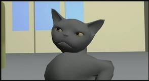
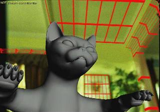
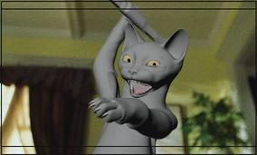
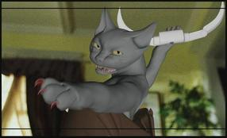
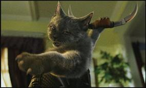

Russian Cat Shot Progressions of Frame 153

1. A rough CG model of a scene. Background will be replaced with camera footage by compositor.

2. Match move created by CG artist to coincide with set.

3. For blocking (positioning) a rough cat model is placed in the CG environment and overlaid on a proxy background plate. (Film negative probided by Warner Bros. Production.)

4. The cat model is refined and animated over the proxy background plate.

5. Shake composites together the final image with a color-corrected and “booger fixed” (dust and defects removed) background plate.
The first four images are Copyright Tippett Studio, All Rights Reserved. The last image is from Cats & Dogs, Copyright Warner Bros. Production.
Copyright © 1994 - 2018 Linux Journal. All rights reserved.